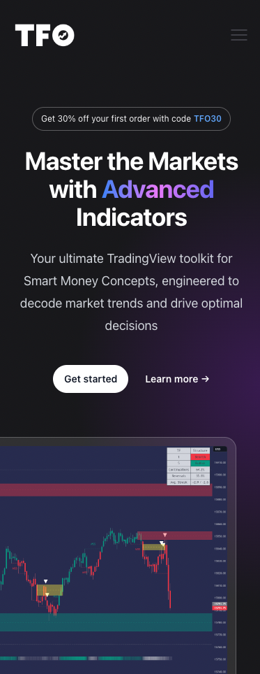

<div @fadeIn class="flex flex-col-reverse  items-center max-w-screen-xl  mx-auto my-14 pt-12  mb-10 md:mb-20 px-4 gap-16  xl:px-0 " id="work">

    <div class="flex flex-col items-center lg:flex-row w-full gap-10 sm:gap-20 justify-center">

        <div class="flex flex-col gap-1 sm:gap-3  lg:w-1/2">
            <h2 class="text-3xl sm:text-5xl text-zinc-700 dark:text-zinc-100 font-bold">
                {{tfo.title}}
            </h2>
            <span class=" text-xl  text-zinc-500 dark:text-zinc-300">{{tfo.type}}</span>

            <span class=" text-base sm:text-lg text-zinc-700 dark:text-zinc-400 mt-4">
                {{tfo.desc.one}}
            </span>
            <span class=" items-end text-base md:text-lg text-zinc-700 dark:text-zinc-300  mt-4">
                <span class="font-medium mr-2">Stack:</span> {{tfo.stack}}
            </span>
            <a [href]="tfo.link" target="_blank" alt="view battle options project" class="mt-6 ring-1 hover:ring-blue-500 px-2 rounded-full py-2 sm:w-2/5 text-center text-lg font-medium text-zinc-700 dark:text-zinc-100 ">
                View Project 
                <fa-icon [icon]="arrowUp" class="text-blue-400 ml-2"/>
            </a>
        </div>
        
        <div class="lg:w-3/4 justify-center  lg:justify-end overflow-clip p-4 md:p-8 rounded-2xl bg-gradient-to-br from-blue-400 to-emerald-400 flex flex-col gap-4 relative">
            
            
        </div>
        

    </div>


</div>
